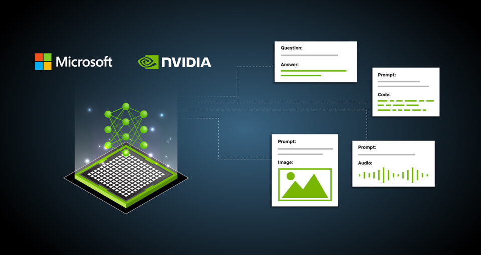
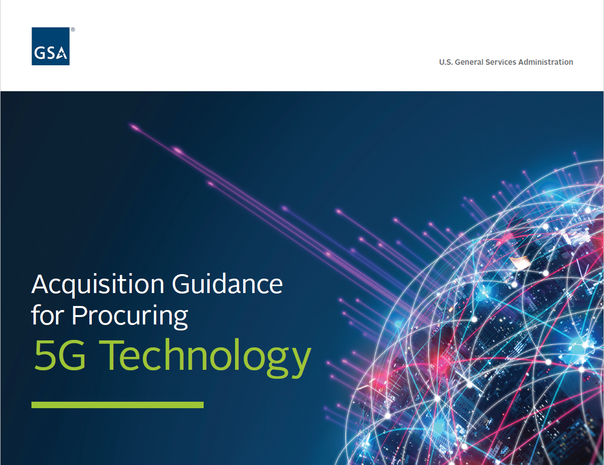
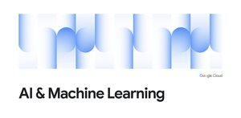
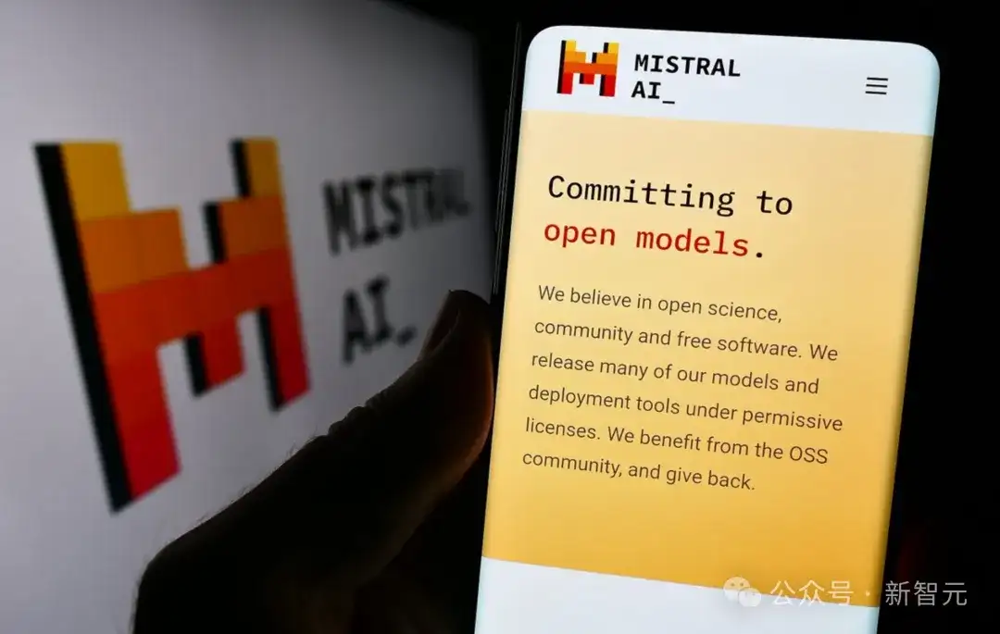
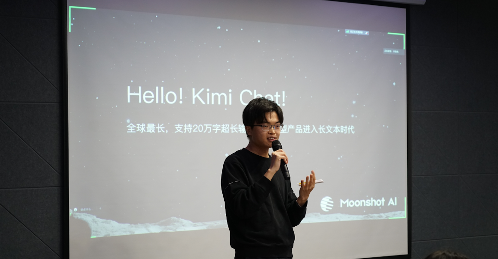
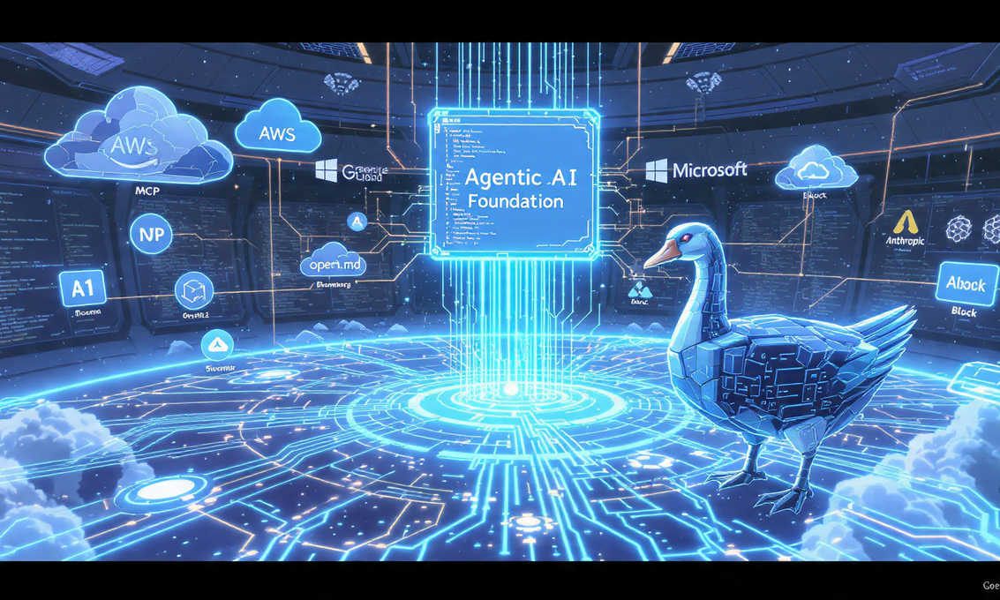
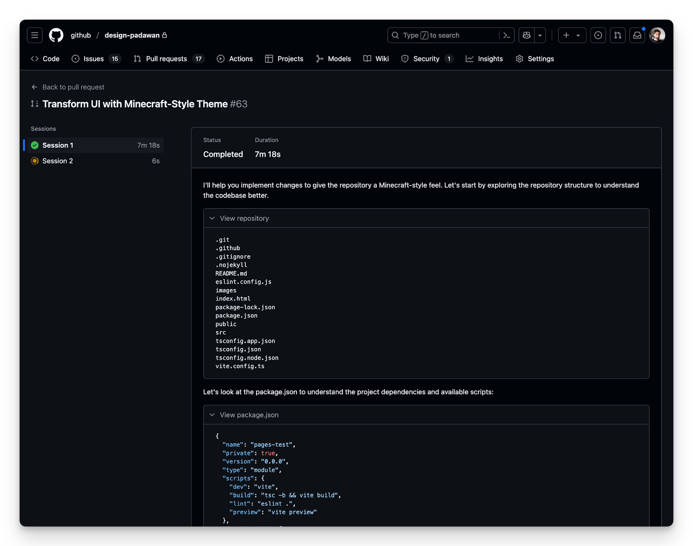
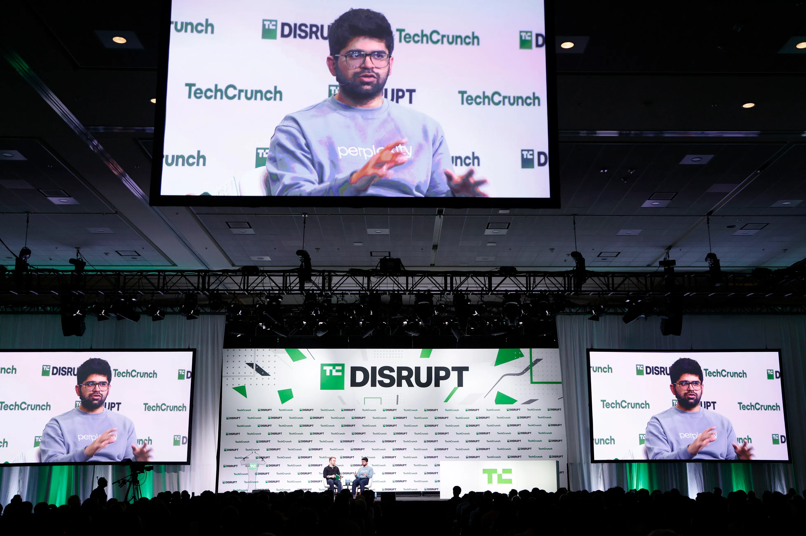
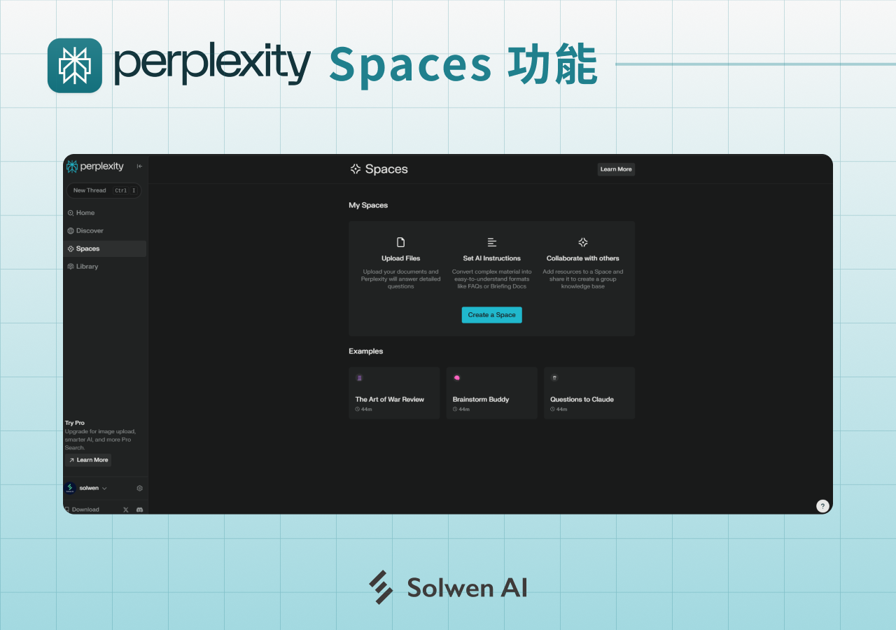

Janet 快车箱
AI Daily Briefing
2026-07-28
VOL 301
读者，早。
开放权重和企业 Agent 同一天变热，说明模型竞争已经离开单纯参数叙事。创作者会先感到工具更多、门槛更低；公司财务会先看到新账单；安全团队会先发现，过去那套“先上线再补洞”的节奏在 Agent 时代很难继续装睡。

Hugging Face 在 7 月 27 日披露一起与访问凭证相关的安全事件，并表示已撤销受影响 token、扩大日志审查和通知相关用户。事件没有被描述成模型权重本身泄露，但它击中了开放模型平台最敏感的位置：仓库、推理端点、数据集和企业自动化脚本往往共用同一套凭证边界。

NVIDIA、Microsoft、IBM、Cisco 等公司在 7 月 27 日宣布围绕开放安全工具、模型评测和部署实践组建协作框架，重点放在企业采用 AI 后的威胁建模、监控和响应。这个动作把安全从单家公司白皮书推向联合标准，也给云厂商和芯片厂留下了规则话语权。

Anthropic 与 Cognizant 在窗口内宣布扩大合作，把 Claude 接入更多企业客户的咨询、迁移和行业解决方案。双方强调的是培训、部署和业务流程嵌入，而不是单纯 API 调用。Cognizant 这类服务商的价值在于把模型塞进客户已有系统，并替客户解释风险、权限和回报周期。

围绕新开放权重模型的准备，OpenAI 在 7 月 27 日把重点放在分发、评测和安全说明上，继续强调与开发者平台和评测社区的协作。这个节奏说明闭源巨头重回开放牌桌时，不能只丢一个下载链接，还要解释许可证、滥用防护和版本维护。

美国政府采购和安全评估在窗口内继续把 AI 供应链纳入审查，焦点包括模型来源、数据处理、云端部署和第三方插件。对企业来说，这类规则不会立刻改变模型榜单，但会改变哪些供应商能进预算、哪些能力只能停在试点。

Moonshot AI 的 Kimi K3 在 7 月 27 日继续围绕开放权重、长上下文和低成本推理扩散，Hugging Face 与社区镜像成为主要分发入口。开发者关注点从参数成绩转向许可证、上下文价格、部署门槛和中文任务表现。

Microsoft 在安全博客和产品更新中继续推进面向 SOC 场景的小型 AI 模型，重点不是通用聊天，而是日志解释、告警聚类、攻击链整理和响应建议。小模型路线的核心卖点是延迟、成本和可控输出。

Google Cloud 在窗口内继续把 Gemini Flash 系列放进企业 AI 路由和多区域部署语境，强调低延迟、可扩展推理和与云端数据工具的连接。Flash 的价值不是单次回答最强，而是在大量 Agent 调用里降低等待和账单波动。

Mistral AI 在 7 月 27 日的开发者更新中继续强化代码和 Agent 场景，强调开放接口、企业部署和工具调用。与超大闭源模型相比，这条路线更看重能否进入开发环境、私有代码库和欧洲客户的数据边界。

Hugging Face 凭证事件的技术含义不止是一次平台通报。开放模型社区过去把模型卡、下载量和评测看得更重，现在必须把 token 生命周期、组织权限、仓库审计和自动化脚本纳入基本功。平台越成功，攻击面越像云服务。

开放安全联盟的深层作用，是把企业采用 AI 时的安全问题拆成可测试、可采购、可外包的模块。模型评测、红队、运行监控、数据边界和响应流程会被写进标准文档，随后进入供应商报价和客户验收。

GitHub 在开发者更新中继续给 Copilot coding agent 增加运行记录、任务状态和团队控制能力。对企业开发团队来说，AI 写代码的争议正在从能不能写，转向谁批准、谁回滚、谁知道它改过什么。

Google Cloud、Microsoft 和 AWS 在窗口内的企业 AI 更新都继续强调成本控制、模型路由和权限策略。Agent 调用会产生连续推理账单，企业不可能只按单次 token 价格评估，它们需要预算阀门、失败重试限制和任务级可见性。

7 月 27 日的融资报道继续显示，资金正大量流向 GPU 云、推理基础设施和数据中心服务商。投资人押的不是单个应用爆款，而是所有 AI 应用共同消耗的算力底座。问题也很直接：如果推理价格继续下行，基础设施公司的回本周期会变得更难看。
多家企业软件公司在窗口内继续把 AI 功能写进订单、续约和财报口径，但推理成本、专业服务和客户教育正在压缩毛利空间。AI 收入听起来更性感，财务上却可能先变成更重的交付包袱。

安全、监控和治理类 AI 公司在 7 月 27 日继续获得投资人关注，叙事从单纯防攻击扩展到模型评测、数据泄露检测、Agent 行为记录和企业使用审查。资本正在把 AI 风险包装成新的软件预算。

Perplexity 在窗口内继续推进面向团队的研究和知识整理能力，重点是把搜索、引用、共享空间和自动摘要接到日常工作流。它面对的竞争不只是搜索引擎，还有 Notion、Google Workspace 和企业内部知识库。